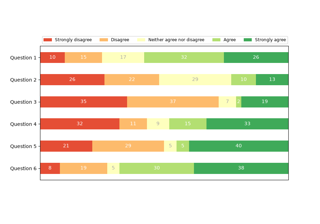
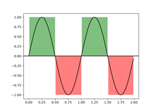

Lines, bars and markers#



Discrete distribution as horizontal bar chart
Discrete distribution as horizontal bar chart



Shade regions defined by a logical mask using fill_between
Shade regions defined by a logical mask using fill_between